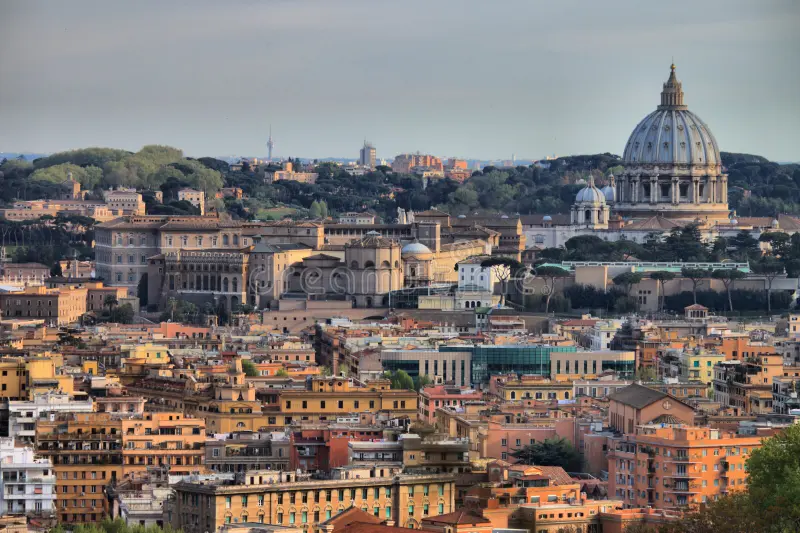

Rzym (wł. Roma, łac. Roma) – stolica i największe miasto Włoch, położone w środkowej części kraju nad rzeką Tyber i Morzem Śródziemnym, zarazem stolica regionu administracyjno-historycznego Lacjum (Lazio).Centrum administracyjne (wł. comune speciale) ma powierzchnię 1287 km² i liczbę ludności 2 825 661, będąc trzecim co do wielkości miastem Unii Europejskiej. Miasto Stołeczne Rzym ma 4 331 856 mieszkańców.Rzym od starożytności znany jest jako Wieczne Miasto (łac. Roma Aeterna), a także „stolica świata” (łac. caput mundi – dosłownie „głowa świata”).Rzym jest metropolią o znaczeniu globalnym, a także dużym węzłem komunikacyjnym z jednym z największych międzynarodowych portów lotniczych w Europie, który obsługuje ponad 38 milionów pasażerów rocznie, rozbudowaną siecią autostrad i linii kolei dużych prędkości. Światowy ośrodek turystyczny z bardzo bogatymi zabytkami starożytności i średniowiecza (kościoły, bazyliki, Koloseum, pałace, akwedukty, fontanny i wiele innych budowli), niezwykle bogate muzea, nowoczesne osiedla mieszkaniowe na przedmieściach. W 1960 roku organizował Letnie Igrzyska Olimpijskie. W 2017 roku Rzym odwiedziło 9,5 mln turystów w ciągu roku. Znajdują się tu siedziby dwóch organizacji ONZ: organizacji do spraw Wyżywienia i Rolnictwa oraz Międzynarodowego Funduszu Rozwoju Rolnictwa. W granicach Rzymu, na prawym brzegu Tybru, leży miasto-państwo Watykan (łac. Status Civitatis Vaticanæ), będący enklawą na terytorium państwowym Włoch.